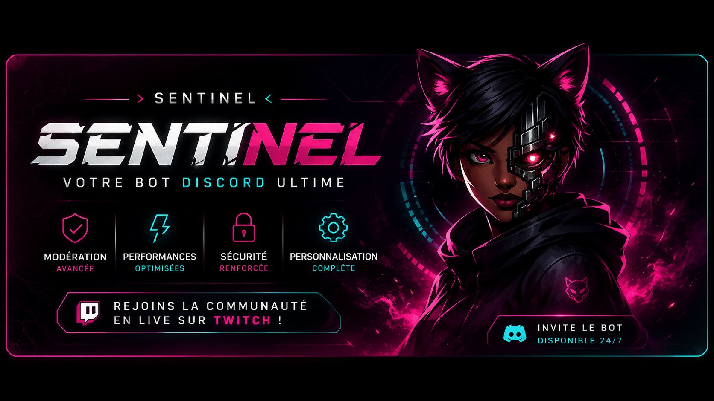
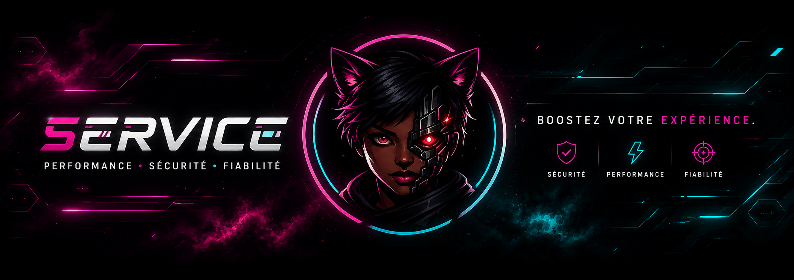

Service
Prise de service, fin de service, role automatique, historique et temps total.
 Sentinel
Sentinel
Performance - Securite - Fiabilite
Un bot Discord bilingue pour suivre les services, controler les heures, garder des logs propres et moderer un serveur sans perdre de temps.


Vue d'ensemble
Sentinel garde la partie gratuite utile pour les petites communautes, et reserve les outils avances aux serveurs qui ont besoin de plus de controle.
Prise de service, fin de service, role automatique, historique et temps total.
Heures personnelles, agents actifs, classement top service et vues avancees premium.
Avertissements, timeout, ban par ID, sanctions, logs et cas premium.
Actions directes depuis le web avec autorisation Discord et choix du serveur.
Structure
Chaque partie de Sentinel a maintenant sa page dediee : presentation, commandes, premium, securite et installation.
Invite le bot, choisis la langue, configure les roles, puis gere le reste depuis Discord ou depuis le dashboard.